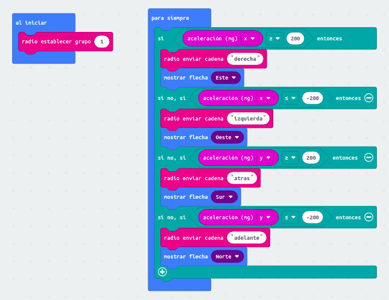
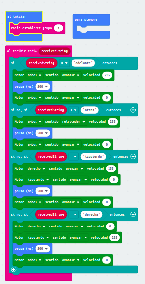

Tarea
Se trata de controlar el robot maqueen con otra micro:bit a través de la radio y con el acelerómetro. Jugando con las aceleraciones en el eje x (izquierda o derecha) controlamos a maqueen con los giros en los mismos sentidos. Modificando las aceleraciones en el eje y (adelante o hacia atrás) controlamos los movimientos del robot en esos sentidos.
Con este reto conseguimos un control remoto de maqueen a través del acelerómetro de otra micro:bit.
Código Micro:bit emisora:

Código de Micro:bit de maqueen (receptora):
